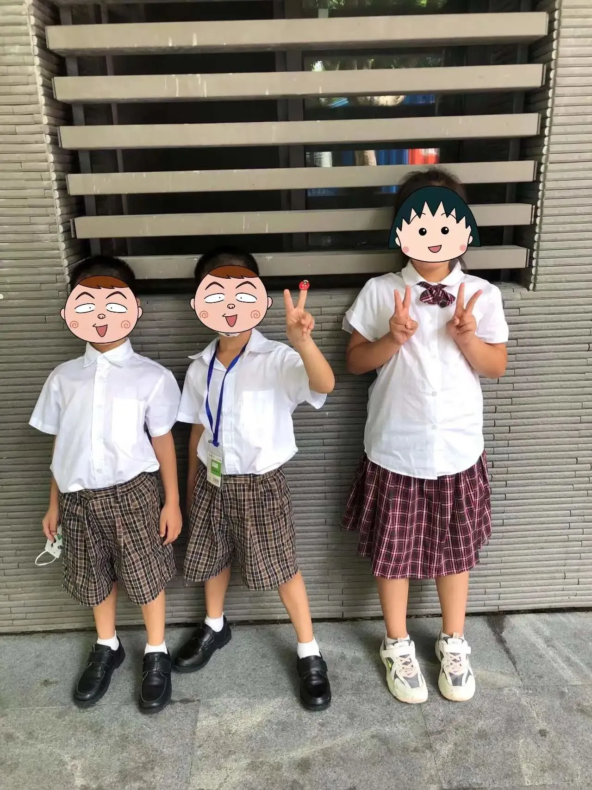
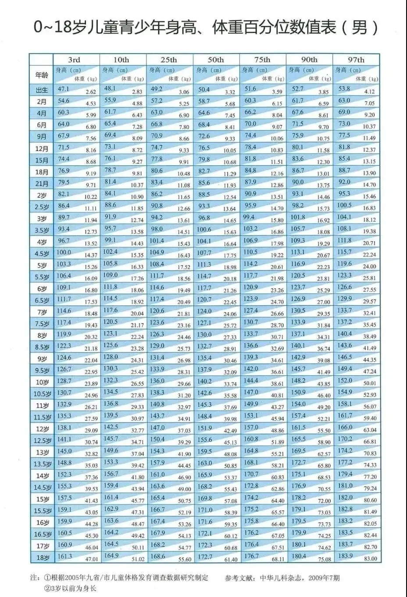
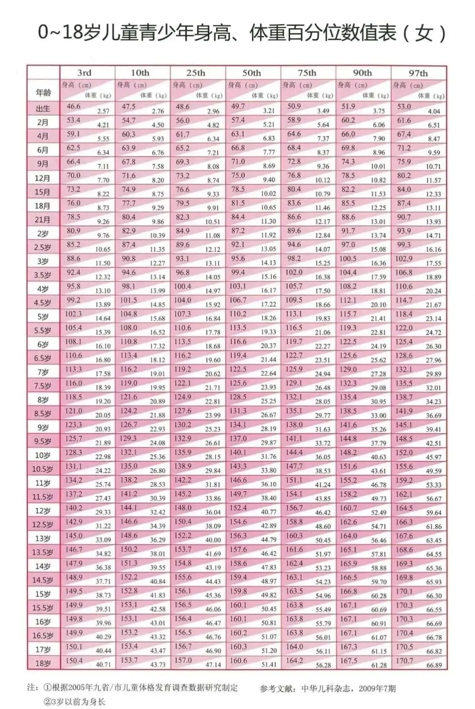

孖仔帮
公众号ID：twinsbang
关注
文|圆圈妈妈
网图|侵删
圆圈放寒假了，像往常一样，我抽空做了个学期总结，整理一些文档和图片，其中有一张照片真是深深刺激到我的玻璃心。
图上的小女生，是圆圈班上的女同学，说是同龄人，但我总觉得，两个XS和1个XXL的既视感，更像是一个大姐姐带着两个小弟弟啊！

不得不说，圆圈在他们班上的专属特色，除了是一对双胞胎，还有就是短！小！精悍。
听说养孩子像抽盲盒，不管胖瘦，美丑，高矮，拆开长啥样都得认命。
我一听心里就窃喜，哈哈，没关系，我有两次机会，可是...两次都是一模一样的矮个子。
圆圈从出生到现在，一直是同龄人中个头最矮，体重最轻，样子最瘦小的那个，从来没被超越过。
出生，47/46cm
40天，52/51cm
4个月，65/64cm
6个月, 70/69cm
9个月, 74.5/73cm
1岁3个月, 80/79cm
2岁8个月, 94.5/93.8cm
3岁11个月, 102.5/101.7cm
4岁5个月, 106.8/108.3cm
5岁1个月, 111/110.5cm
6岁3个月, 118/116.5cm
...
这数据是什么意思呢？来看看下图这张标准图，
身高对照表中50th为儿童（男/女）在该年龄对应的平均身高水平，比如1岁（12个月）的男宝标准身高是76.5cm，女宝标准身高是75cm。如果孩子的身高在50th的左边，就说明孩子身高没有达到标准，越往左越小个。
意思就是，他们俩的身高一直处于中低档位。
出生时穿的和尚服，最小的52码穿在身上就像唱大戏的，NB码尿不湿也包不住尿；
上幼儿园，大家都选110或120，只有圆圈两兄弟，堂堂小男子汉竟然在100和110码之间徘徊纠结；
读一年级了，他们的校服码数永远有现货，因为都是最小码的，没人抢。
圆圈的个头矮在我们小区的遛娃圈也是鼎鼎有名的，所以吸引了很多矮个子妈妈慕名前来找我一起遛娃唠家常。
大概是在我身上能让妈妈找到成就感吧，而我也很识趣地发出灵魂般的赞美："哇你们家的娃长得好高哦。"
我不是虚伪，是真的就事论事，而且这样说，所有人都觉得我这人实在，讲真话不玩虚，因为...有目共睹嘛。
妈妈们看到我的两个娃之后都会瞬间优越感倍增，然后满脸同情地安慰我：“哎呀，那不同啊，你们家是两个一起，不一样呢。”
为了不让近邻之情的小船说翻就翻，每次我都会憋住内伤，回复一个姨母般的微笑。
仔细想想好像是那么一回事，有时候会觉得挺对不住圆圈，没有在娘肚里给到他们足够的营养，没有撑到足月，导致他们先天羸弱，再加上我这160cm的小个子，给圆圈爸180cm的中个子，严重拖了后腿。
为了让他们长个子，我也是豁出去了。
配方奶一直给他们喝到三岁，现在也是把鲜牛奶当水喝，肉啊蛋啊只要不吐都使劲往他们嘴里塞，运动跳绳打球也有坚持打卡....就差没去打生长激素了。
可是吃了个寂寞，跳了个浮云，伤的是老母亲的心，他们依旧是一副又瘦又小，长不壮长不高的弱鸡样。
去拍6周岁纪念照时，摄影师还以为他们刚上幼儿园，可把我心塞得无言以对。
这是我的心病，我时常不愿提起，却又时常被撩起。
这不，前段时间看到爸爸群在讨论双胞胎的身高，我马上就不淡定了，哎，哪壶不来提哪壶！
有说，双胞胎体重不输单胎宝宝，甚至还有秒杀，赶超的趋势；但也有说，自家双胞胎也是偏矮偏小偏瘦，身高体重都比不过其他小孩。
这让我好像看到了一点希望：难道双胞胎真的搞特殊，受精卵一分为二地翻倍，身高体重会减半？
今天这篇，我们来做个小调查，看看双胞胎孩子，与其他同龄人相比，是不是普遍身高偏矮？
考虑到身高有遗传因素的影响，我们还可以在留言区#接龙。
格式如下（单位:cm)：
宝爸身高+宝妈身高+双胞胎性别年龄身高
例如：圆圈爸180，圆圈妈160，双子6岁，哥哥118/弟弟116.5
欢迎小伙伴们来留言区拉仇恨吧。
今日互动话题
#你们家双胞胎有多高呢？#
评论区聊一聊呗！
微信公众号：孖仔帮
ID : twinsbang
专注双胞胎孕育，养育，教育经验分享
扫码关注我们
点一下你会更好看耶


